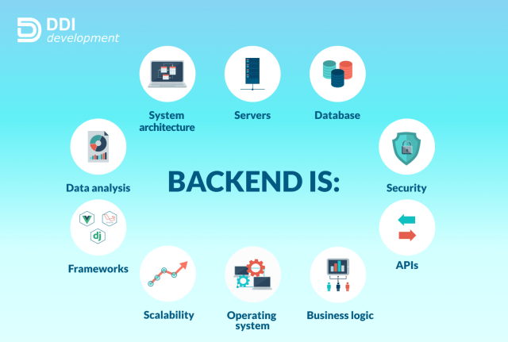

Eu sempre tive um facinio por programação, mesmo hoje não sabendo de muita coisa, eu tenho uma sede de conhecimento que acho que se adequaria muito melhor ao Backend, sempre foi uma area que me interessase e hoje tenho a oportunidade de me aprofundar e seguir por essa area.
Explicação raida do que é o backend é a parte “por trás das câmaras”, não visível para o usuário, que gerencia a lógica, dados e infraestrutura para que a aplicação funcione. Ele lida com tarefas como a interação com bancos de dados, o processamento de informações, a autenticação de usuários e a comunicação com outros sistemas através de APIs.